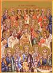

La Nación de Israel
A lo largo del libro de Deuteronomio, Dios dio instrucciones detalladas a Su pueblo sobre cómo deberían vivir cuando llegasen a Canaán, la tierra que Dios había prometido a Abraham. Estas instrucciones incluía el tipo de gobierno que debería formar. En primer lugar, que se regiría por una serie de jueces (de ahí, el libro de Jueces). Luego, en Deuteronomio 17:14-15, Dios les dijo a los Israelitas que los reyes deberían gobernar el pueblo, pero sólo los reyes que fueron específicamente elegidos (ungidos) por Dios.
Aunque Saúl, el primer rey de Israel, fue designado por Dios,al final él fue desobediente y demostraba gran falta de fe. Dios no continuóel gobierno de Israel a través de la línea de Saúl (el hijo de Saúl, Jonathan, no le sucedió como rey).
Como vimos en la primera sección de este librito, cada libro de la Biblia puede agruparse por el tipo de literatura (género) que representan.Los primeros ocho libros de la Biblia, del Génesis al Rut, relatan los acontecimientos de los comienzos de la historia en orden cronológico (el orden en que ocurrieron). La historia de la nación de Israel se cuenta en una serie de libros del Antiguo Testamento, pero no en orden cronológico. Para hacerse una mejor idea de que le ocurrió a quién y cuándo, es útil tener un libro de referencia que proporcione una cronología de los acontecimientos, y de cuándo y dónde tienen lugar las historias que se encuentran en el Antiguo Testamento. Aquí hay una tabla muy abreviada de los reyes que gobernaron en Israel y dónde se pueden encontrar sus historias en el Antiguo Testamento:
David
El hombre que se convertiría en el próximo rey de Israel, y quizás el más importante, provenía de unos orígenes inusuales. David era el hijo más joven (no el más mayor, como era habitual) de un hombre que vivía en un pueblo muy remoto llamado Belén. (¿Le suena?) ¡Sería a través de la línea de David (su descendientes) que Jesucristo nacería!
Como todos los hombres anteriores que Dios había escogido para ayudarle a llevar a cabo su voluntad en el mundo, David no era perfecto. Él cometió pecados muy graves en su época como rey. Sin embargo, Dios le dijo al profeta Samuel que David fue un hombre conforme al corazón de Dios.
Una Nación Desobediente
El hijo de David, Salomón, le suceEl hombre que se convertiría en el próximo rey de Israel, y quizás el más importante, provenía de unos orígenes inusuales. David era el hijo más joven (no el más mayor, como era habitual) de un hombre que vivía en un pueblo muy remoto llamado Belén. (¿Le suena ?) ¡Sería a través de la línea de David (su descendientes) que Jesucristo nacería!.
Como todos los hombres anteriores que Dios había escogido para ayudarle a llevar a cabo su voluntad en el mundo, David no era perfecto. Él cometió pecados muy graves en su época como rey. Sin embargo, Dios le dijo al profeta Samuel que David fue un hombre conforme al corazón de Dios..
Una Nación Desobediente .El hijo de David, Salomón, le suce!Como con todos los hombres de la anterior Dios había escogido para ayudarle a llevar a cabo su voluntad en el mundo, David no era perfecto. Él cometió pecados muy graves en su momento como rey. Sin embargo, Dios le dijo al profeta Samuel que David fue un hombre después de que el corazón de Dios.

Una Nación Desobediente
El hijo de David, Salomón, le sucedió como rey. Salomón es conocido por ser muy sabio y aprendido. También es el rey que llevó a Israel a completar la construcción del magnífico templo concebido por su padre David. Salomón se acredita con el escrito de por lo menos dos libros del Antiguo Testamento: Cantares (¡una poema de amor!) y Eclesiastés.
Si usted recordará, el primer y principal mandamiento de Dios a Su pueblo es que NO tienen otros dioses. Lamentablemente, Israel fue rodeado de tribus y naciones que adoraron a una variedad de dioses e ídolos. Salomón trajo muchos de estos extranjeros a Israel para ayudar a construir el templo; junto con los trabajadores llegaron sus ídolos. Como todos sabemos en nuestras propias vidas, es difícil estar constantemente en torno a personas que no son como nosotros, y creer diferente a lo que hacemos, y no comenzar a adoptar algunas de sus creencias y prácticas. Esto es lo que sucedió a la nación de Israel.
Mientras que Salomón fue un gran rey de muchas maneras, su gobierno fue a menudo muy severo. Él se impuso pesados impuestos que gravan sobre la gente para construir el templo, así como de un lujoso palacio para sí mismo. Esto, entre otras cosas, causó que la nación de Israel a dividir en dos reinos (Judá en el sur, Israel en el norte).

Dios Envía Advertencias a Través de los Profetas
La nación de Israel había sido elegido por Dios para ser Su pueblo (Deuteronomio 7:7-9), pero una y otra vez, los Judios sería desobedecer a Dios por el culto a los ídolos de los pueblos que vivían a su alrededor. Con frecuencia, este ídolo de culto que participan infantil prácticas como el sacrificio y la inmoralidad sexual que Dios no puede tolerar de Su pueblo.
Una y otra vez, Dios envió profetas a la gente para advertirles de que habría graves consecuencias para su desobediencia. La sección final del Antiguo Testamento registra las palabras que Dios inspiró a Sus profetas para decir. Cada predicción Dios envió a través de Sus profetas de la derrota y el exilio de Israel llegó a pasar.
Para ver el orden de los escritos de los profetas, podemos ponerlos en una gráfica similar a la que hemos hecho para los reyes de Israel. Los acontecimientos que se estaban llevando a cabo durante los tiempos de la 1 y 2 Samuel, 1 y 2 Reyes y 1 y 2 Crónicas eran los mismos que los profetas trataron de advertir al pueblo de Israel.
Una Nación Derrotada
Los tres últimos libros del Antiguo Testamento, Hageo, Zacarías y Malaquías, fueron escritos para alentar al pueblo Judío de revivir sus antiguos fe en Dios y para convertirse en fiel de nuevo en su adoración de Él (Judaísmo).
Después de varios intentos fallidos, ellos incluso eran capaces de construir un nuevo templo. Era sólo una sombra de la antigua, glorioso templo construido durante el reinado del Rey Salomón, pero, aún así, era un lugar en su propia patria donde pudieran finalmente adorar al único Dios verdadero de nuevo.
Y incluso como los profetas predecían la caída de Israel, sus predicciones se han mezclado con las profecías relativas a un salvador, un Mesías, que vendría a constituir un nuevo pacto entre Dios y Su pueblo. (Isaías 53, 55)
Dios preguntó a un pueblo derrotado a tener fe en que, incluso cuando las cosas parecía más sombrío, el futuro todavía está en Sus manos y que Él todavía anhelado de tener una relación con la humanidad, Sus creación más alta.

Judaísmo (Adoración de Dios) Después del Exilio
La religión judía siempre han entrañado sacrificios de animales a Dios por el perdón de sus pecados. ¿Recuerda que Dios dijo a Adán y Eva que tendrían que morir por sus pecados? Para los Judios, sacrificar un animal a Dios, como Él les había dado instrucciones de hacerlo, fue un intercambio simbólico de muerte por sus pecados.
Cuando los Judios regresaron a Israel después de sus exilio, los profetas alentó a la gente para comenzar a rendir culto a Dios y obedecer todos Sus mandamientos de nuevo. Parecía que el pueblo Judío (al menos los que regresaron a Israel) había, por fin, aprendí la lección: Dios no tolerará idolatría y la desobediencia.
Los sacerdotes Judíos, que se levantaron para gobernar el Judios como una consecuencia natural de sus liderazgo espiritual, contribuyó a crear una sociedad decididos a ser fieles: que no se permiten influenciar por otras culturas y hacer lo mejor de sí a obedecer la letra de todas las leyes de Dios. Esta fue la sociedad en la que Jesucristo, el Mesías, nació.
Bajo el antiguo pacto, Dios había prometido a la salud y la prosperidad a los que obedecían Sus mandamientos. La nación de Israel había aumentado poderosos y ricos cuando tenían fe en Dios. Lo que los Judios que regresó a Israel no se dieron cuenta fue que, con la caída de Israel, el antiguo pacto ya no estaba en vigor.
Grandes Hombres y Mujeres del Antiguo Testamento
Hemos hablado de un largo período de tiempo en tan sólo unas pocas páginas, pero la Biblia está llena de historias de grandes hombres y mujeres de Dios. ¡Usted debe leer acerca de ellos! Aquí hay una lista con los que empezar; a medida que comienza a leer la Biblia, usted sin duda encontrará muchos otros que podrían incluirse en esta lista. Por qué no empezar con estas? Luego, como pasa el tiempo y más lea, puede añadir su propia lista de grandes persones de la Biblia! Asegúrese de marcar en los capítulos y versículos cuando donde se encuentran ellos, por lo que usted puede encontrarlos en cualquier momento que desees.
| | ||
¡Vamos a Empezar!
Antes de ir más allá en este libro, ahora puede ser un buen momento para buscar algunos de los pasajes por encima o por cualquiera de las citas que se han dado hasta ahora. Sería una gran práctica para aprender a buscar el "capítulo y versículo" referencias.